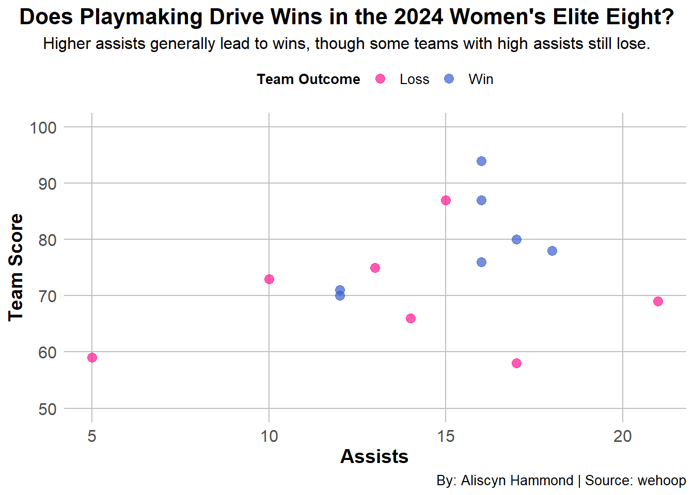

Code
library(tidyverse)
library(ggplot2)
elite<-read.csv("dataproject/2024_elite_eight_wbb.csv")
selected_teams <- c("Gamecocks", "Beavers", "Longhorns", "Wolfpack", "Hawkeyes", "Tigers", "Huskies", "Trojans")
elite_eight <- elite[elite$team_name %in% selected_teams, ]
head(elite_eight) game_id season season_type game_date game_date_time team_id
1 401637607 2024 3 2024-03-31 2024-03-31T19:16:00Z 152
2 401637607 2024 3 2024-03-31 2024-03-31T19:16:00Z 251
3 401637608 2024 3 2024-03-31 2024-03-31T17:00:00Z 204
4 401637608 2024 3 2024-03-31 2024-03-31T17:00:00Z 2579
5 401637609 2024 3 2024-04-01 2024-04-02T01:30:00Z 41
6 401637609 2024 3 2024-04-01 2024-04-02T01:30:00Z 30
team_uid team_slug team_location team_name
1 s:40~l:54~t:152 nc-state-wolfpack NC State Wolfpack
2 s:40~l:54~t:251 texas-longhorns Texas Longhorns
3 s:40~l:54~t:204 oregon-state-beavers Oregon State Beavers
4 s:40~l:54~t:2579 south-carolina-gamecocks South Carolina Gamecocks
5 s:40~l:54~t:41 uconn-huskies UConn Huskies
6 s:40~l:54~t:30 usc-trojans USC Trojans
team_abbreviation team_display_name team_short_display_name team_color
1 NCSU NC State Wolfpack NC State cc0000
2 TEX Texas Longhorns Texas c15d26
3 ORST Oregon State Beavers Oregon St 231f20
4 SC South Carolina Gamecocks South Carolina 73000a
5 CONN UConn Huskies UConn 0c2340
6 USC USC Trojans USC 9e2237
team_alternate_color team_logo
1 ffffff https://a.espncdn.com/i/teamlogos/ncaa/500/152.png
2 ffffff https://a.espncdn.com/i/teamlogos/ncaa/500/251.png
3 d73f09 https://a.espncdn.com/i/teamlogos/ncaa/500/204.png
4 ffffff https://a.espncdn.com/i/teamlogos/ncaa/500/2579.png
5 f1f2f3 https://a.espncdn.com/i/teamlogos/ncaa/500/41.png
6 ffcc00 https://a.espncdn.com/i/teamlogos/ncaa/500/30.png
team_home_away team_score team_winner assists blocks defensive_rebounds
1 away 76 TRUE 16 7 27
2 home 66 FALSE 14 3 26
3 away 58 FALSE 17 5 30
4 home 70 TRUE 12 6 29
5 away 80 TRUE 17 5 33
6 home 73 FALSE 10 4 27
fast_break_points field_goal_pct field_goals_made field_goals_attempted fouls
1 16 45.3 24 53 14
2 3 39.7 29 73 21
3 4 36.4 20 55 17
4 11 33.3 26 78 14
5 10 48.3 28 58 21
6 13 32.9 23 70 20
free_throw_pct free_throws_made free_throws_attempted largest_lead
1 76.0 19 25 18
2 63.6 7 11 4
3 76.9 10 13 2
4 77.8 14 18 14
5 63.0 17 27 12
6 90.0 18 20 9
offensive_rebounds points_in_paint steals team_turnovers technical_fouls
1 4 24 6 0 0
2 18 44 3 1 0
3 7 14 3 2 0
4 22 44 6 0 0
5 9 28 6 0 0
6 14 20 6 1 0
three_point_field_goal_pct three_point_field_goals_made
1 50.0 9
2 16.7 1
3 32.0 8
4 20.0 4
5 46.7 7
6 31.0 9
three_point_field_goals_attempted total_rebounds total_technical_fouls
1 18 31 0
2 6 44 0
3 25 37 0
4 20 51 0
5 15 42 0
6 29 41 0
total_turnovers turnover_points turnovers opponent_team_id opponent_team_uid
1 11 8 11 251 s:40~l:54~t:251
2 14 10 14 152 s:40~l:54~t:152
3 12 2 12 2579 s:40~l:54~t:2579
4 6 12 6 204 s:40~l:54~t:204
5 12 17 12 30 s:40~l:54~t:30
6 10 14 10 41 s:40~l:54~t:41
opponent_team_slug opponent_team_location opponent_team_name
1 texas-longhorns Texas Longhorns
2 nc-state-wolfpack NC State Wolfpack
3 south-carolina-gamecocks South Carolina Gamecocks
4 oregon-state-beavers Oregon State Beavers
5 usc-trojans USC Trojans
6 uconn-huskies UConn Huskies
opponent_team_abbreviation opponent_team_display_name
1 TEX Texas Longhorns
2 NCSU NC State Wolfpack
3 SC South Carolina Gamecocks
4 ORST Oregon State Beavers
5 USC USC Trojans
6 CONN UConn Huskies
opponent_team_short_display_name opponent_team_color
1 Texas c15d26
2 NC State cc0000
3 South Carolina 73000a
4 Oregon St 231f20
5 USC 9e2237
6 UConn 0c2340
opponent_team_alternate_color
1 ffffff
2 ffffff
3 ffffff
4 d73f09
5 ffcc00
6 f1f2f3
opponent_team_logo opponent_team_score
1 https://a.espncdn.com/i/teamlogos/ncaa/500/251.png 66
2 https://a.espncdn.com/i/teamlogos/ncaa/500/152.png 76
3 https://a.espncdn.com/i/teamlogos/ncaa/500/2579.png 70
4 https://a.espncdn.com/i/teamlogos/ncaa/500/204.png 58
5 https://a.espncdn.com/i/teamlogos/ncaa/500/30.png 73
6 https://a.espncdn.com/i/teamlogos/ncaa/500/41.png 80Code
ggplot(elite_eight, aes(x = assists, y = team_score, color = team_winner)) +
geom_point(alpha = 0.7, size = 3) +
scale_color_manual(values = c("TRUE" = "royalblue3", "FALSE" = "deeppink"),
labels=c("TRUE"="Win","FALSE"="Loss")
) +
labs(
title = "Does Playmaking Drive Wins in the 2024 Women's Elite Eight?",
subtitle = "Higher assists generally lead to wins, though some teams with high assists still lose.",
x = "Assists",
y = "Team Score",
caption = "By: Aliscyn Hammond | Source: wehoop",
color = "Team Outcome"
) +
theme_minimal() +
theme(
plot.title = element_text(hjust = 0.5, size = 16, face = "bold"),
plot.subtitle = ggtext::element_markdown(size = 12, lineheight = 1.2, hjust = 0.5),
axis.title = element_text(size = 14,face="bold"),
axis.text = element_text(size = 12),
plot.caption = element_text(size = 10, hjust = 1),
legend.position = "top",
legend.title = element_text(size = 10,face="bold"),
legend.text = element_text(size = 10)
) +
theme(panel.grid.major = element_line(color = "gray", size = 0.5),
panel.grid.minor = element_blank(),
plot.title.position = "plot")+
scale_y_continuous(limits=c(50,100))+
scale_x_continuous(limits = c(min(elite_eight$assists), max(elite_eight$assists)))